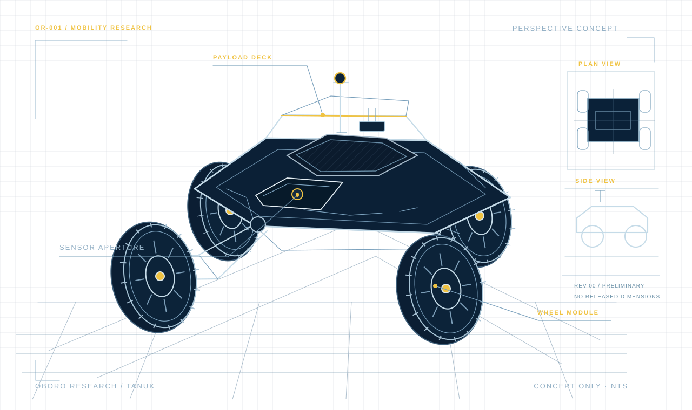

01 / FLAGSHIP PROJECT
TANUK.
HIGH-SPEED LUNAR ROVER
An experimental robotics platform pursuing one ambitious question: How fast can a rover go on the Moon?
EXPLORE TANUK ↗
OBORO RESEARCH / THE MISSION
Oboro Research is an independent engineering initiative focused on high-performance robotics and experimental hardware.
Our flagship project, TANUK, investigates the boundaries of planetary rover speed without sacrificing mobility, control, or reliability on difficult terrain.
We design, build, test, and document real machines. Each project is an opportunity to turn an ambitious idea into measurable engineering progress.
SEE WHAT WE'RE BUILDING01 / ROBOTICS
FLAGSHIP PROJECT · IN DEVELOPMENT
THE NEXT EXPERIMENT
TANUK is a compact, high-speed rover test platform focused on rugged terrain, modular payloads, and eventually autonomous operation. We begin with remote control and iterate through testing and data.
Design concepts are preliminary. Performance and configuration will be published as testing progresses.
02 / EXPERIMENTS
SMALL BUILDS, BIG CURIOSITY
ELECTRONICS / INDUSTRIAL DESIGN
A custom timepiece pairing vintage IN-14 tubes with modern control electronics, bespoke PCBs, and interchangeable city labels.
IN DEVELOPMENT03 / THE PERSON BEHIND THE PROJECTS
I'm an aerospace engineer who likes building things that haven't been tried before.
My interests span planetary robotics, electromechanical design, manufacturing, controls, and engineering validation. Oboro Research is my space for developing independent projects and documenting how they evolve from concept sketches to working hardware.
Expect design decisions, prototypes, tests, failures, and lessons learned, not just polished final results.